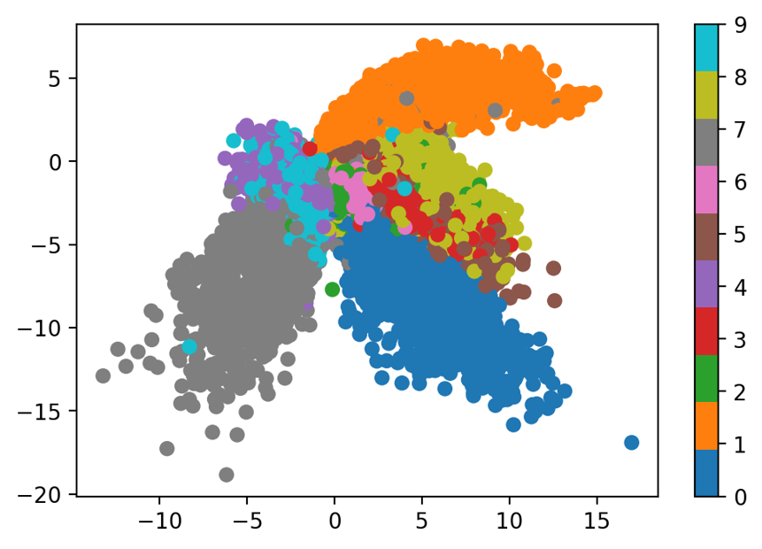
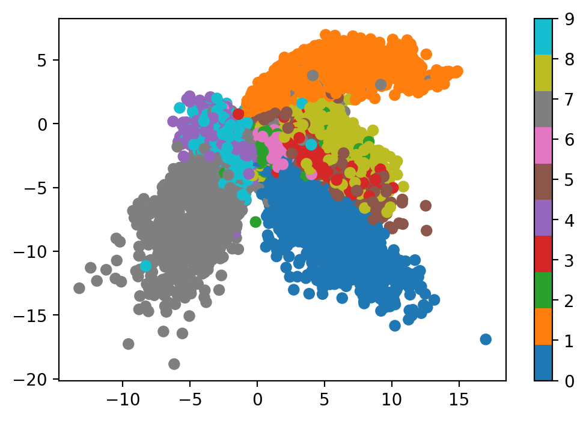
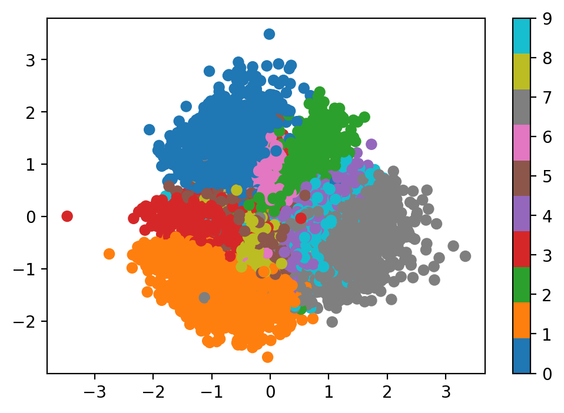

import torch
import torch.nn as nn
class ConvAutoencoder(nn.Module):
def __init__(self):
super().__init__()
# Encoder
self.encoder = nn.Sequential(
nn.Conv2d(1, 16, 3, stride=2, padding=1), # [B, 1, 28, 28] -> [B, 16, 14, 14]
nn.ReLU(),
nn.Conv2d(16, 32, 3, stride=2, padding=1), # [B, 16, 14, 14] -> [B, 32, 7, 7]
nn.ReLU(),
nn.Conv2d(32, 64, 7) # [B, 32, 7, 7] -> [B, 64, 1, 1]
)
# Decoder
self.decoder = nn.Sequential(
nn.ConvTranspose2d(64, 32, 7), # [B, 64, 1, 1] -> [B, 32, 7, 7]
nn.ReLU(),
nn.ConvTranspose2d(32, 16, 3, stride=2, padding=1, output_padding=1),
nn.ReLU(),
nn.ConvTranspose2d(16, 1, 3, stride=2, padding=1, output_padding=1),
nn.Sigmoid()
)
def forward(self, x):
x = self.encoder(x)
x = self.decoder(x)
return xWhat is an Autoencoder?
- Neural network architecture that learns to:
- Compress (encode) data into a lower-dimensional representation
- Reconstruct (decode) the original data from this representation
- Trained to minimize reconstruction error
- Learns efficient data representations unsupervised

Basic Autoencoder Architecture
Autoencoder Components
- Encoder: Compresses input into latent representation
- Latent Space: Compressed representation of the data
- Decoder: Reconstructs input from latent representation
- Training objective: minimize difference between input and output
Training an Autoencoder
def train_autoencoder(model, train_loader, num_epochs=10):
device = torch.device('cuda' if torch.cuda.is_available() else 'cpu')
model = model.to(device)
criterion = nn.MSELoss()
optimizer = torch.optim.Adam(model.parameters(), lr=1e-3)
for epoch in range(num_epochs):
for data in train_loader:
img = data[0].to(device)
# Forward pass
output = model(img)
loss = criterion(output, img)
# Backward pass
optimizer.zero_grad()
loss.backward()
optimizer.step()Applications of Autoencoders
- Dimensionality Reduction
- Alternative to PCA
- Can capture non-linear relationships
- Denoising
- Train to reconstruct clean data from noisy input
- Useful for image restoration
- Feature Learning
- Learn meaningful representations for downstream tasks
- Transfer learning
Variations of Autoencoders
- Denoising Autoencoders
- Add noise to input during training
- Learn to recover original data
- Variational Autoencoders (VAE)
- Learn probabilistic encodings
- Generate new samples
- Sparse Autoencoders
- Add sparsity constraints to latent representation
- Learn more efficient encodings
Example: Denoising Autoencoder
def add_noise(img, noise_factor=0.3):
noisy = img + noise_factor * torch.randn(*img.shape)
return torch.clamp(noisy, 0., 1.)
def train_denoising_autoencoder(model, train_loader, num_epochs=10):
device = torch.device('cuda' if torch.cuda.is_available() else 'cpu')
model = model.to(device)
criterion = nn.MSELoss()
optimizer = torch.optim.Adam(model.parameters(), lr=1e-3)
for epoch in range(num_epochs):
for data in train_loader:
img = data[0].to(device)
noisy_img = add_noise(img)
# Forward pass
output = model(noisy_img)
loss = criterion(output, img) # Compare with clean image
# Backward pass
optimizer.zero_grad()
loss.backward()
optimizer.step()Practical Tips for Autoencoders
- Choose appropriate architecture for your data type
- CNNs for images
- RNNs for sequences
- Dense layers for tabular data
- Consider:
- Latent space dimension
- Depth of encoder/decoder
- Loss function
- Regularization techniques
- Common issues:
- Overfitting
- Underfitting
- Mode collapse (in VAEs)
- Reconstruction quality vs. compression trade-off
Variational Autoencoders (VAEs)
- Extension of traditional autoencoders that learns a probabilistic latent representation
- Instead of encoding to fixed points, encodes to probability distributions
- Enables:
- Principled generation of new samples
- Meaningful latent space interpolation
- Better regularization of the latent space
VAE vs. Traditional Autoencoder
Traditional Autoencoder
- Deterministic encoding
- Point-wise latent representation
- No guarantee of continuous latent space
- Focus on reconstruction
Variational Autoencoder
- Probabilistic encoding
- Distribution-based latent representation
- Continuous, structured latent space
- Balance between reconstruction and regularization
VAE Mathematics
Instead of encoding input \(x\) to a point, VAE encodes to parameters of a distribution:
- Encoder outputs \(\mu\) and \(\log \sigma^2\) for each latent dimension
- Latent vector is sampled: \(z = \mu + \sigma \odot \epsilon\), where \(\epsilon \sim \mathcal{N}(0, I)\)
The VAE loss has two terms: \[\mathcal{L}_{\text{VAE}} = \mathcal{L}_{\text{reconstruction}} + \beta \cdot \mathcal{L}_{\text{KL}}\]
where: \[\mathcal{L}_{\text{KL}} = \frac{1}{2}\sum_{j=1}^J (\mu_j^2 + \sigma_j^2 - \log(\sigma_j^2) - 1)\]
VAE Implementation
class ConvVAE(nn.Module):
def __init__(self, latent_dim=32):
super().__init__()
# Encoder
self.encoder = nn.Sequential(
nn.Conv2d(1, 32, 3, stride=2, padding=1), # 28x28 -> 14x14
nn.ReLU(),
nn.Conv2d(32, 64, 3, stride=2, padding=1), # 14x14 -> 7x7
nn.ReLU(),
nn.Flatten(),
nn.Linear(64 * 7 * 7, 256)
)
# Latent space
self.fc_mu = nn.Linear(256, latent_dim)
self.fc_var = nn.Linear(256, latent_dim)
# Decoder
self.decoder_input = nn.Linear(latent_dim, 64 * 7 * 7)
self.decoder = nn.Sequential(
nn.Unflatten(1, (64, 7, 7)),
nn.ConvTranspose2d(64, 32, 3, stride=2, padding=1, output_padding=1),
nn.ReLU(),
nn.ConvTranspose2d(32, 1, 3, stride=2, padding=1, output_padding=1),
nn.Sigmoid()
)
def encode(self, x):
x = self.encoder(x)
mu = self.fc_mu(x)
log_var = self.fc_var(x)
return mu, log_var
def reparameterize(self, mu, log_var):
std = torch.exp(0.5 * log_var)
eps = torch.randn_like(std)
return mu + eps * std
def decode(self, z):
x = self.decoder_input(z)
x = self.decoder(x)
return x
def forward(self, x):
mu, log_var = self.encode(x)
z = self.reparameterize(mu, log_var)
return self.decode(z), mu, log_varTraining a VAE
def train_vae(model, train_loader, num_epochs=10):
device = torch.device('cuda' if torch.cuda.is_available() else 'cpu')
model = model.to(device)
optimizer = torch.optim.Adam(model.parameters(), lr=1e-3)
for epoch in range(num_epochs):
for data in train_loader:
img = data[0].to(device)
# Forward pass
recon_batch, mu, log_var = model(img)
loss = vae_loss(recon_batch, img, mu, log_var)
# Backward pass
optimizer.zero_grad()
loss.backward()
optimizer.step()VAE Latent Space Properties
- Continuous: Similar points in latent space decode to similar images
- Structured: Enforced by KL divergence term
- Meaningful: Can perform interpolation and arithmetic in latent space


Generating New Samples with VAE
def generate_samples(model, num_samples=1):
with torch.no_grad():
# Sample from standard normal distribution
z = torch.randn(num_samples, model.latent_dim).to(device)
# Decode the samples
samples = model.decode(z)
return samples
def interpolate(model, img1, img2, steps=10):
# Encode both images
mu1, _ = model.encode(img1)
mu2, _ = model.encode(img2)
# Create interpolation points
alphas = torch.linspace(0, 1, steps)
interpolated = []
with torch.no_grad():
for alpha in alphas:
z = alpha * mu1 + (1 - alpha) * mu2
interpolated.append(model.decode(z))
return interpolatedKey Differences Summary
- Latent Space
- Vanilla: Discrete, potentially discontinuous
- VAE: Continuous, probabilistic
- Loss Function
- Vanilla: Only reconstruction loss
- VAE: Reconstruction + KL divergence loss
- Generation Capabilities
- Vanilla: Limited/unreliable
- VAE: Principled generation of new samples
- Training Stability
- Vanilla: Can be unstable
- VAE: More stable due to regularization
Example training a VAE
import torch
import torch.nn as nn
import torch.nn.functional as F
from torch.utils.data import DataLoader
from torchvision import datasets, transforms
import matplotlib.pyplot as plt
def add_noise(x, noise_factor=0.3):
noisy = x + noise_factor * torch.randn_like(x)
return torch.clamp(noisy, 0., 1.)
def train_epoch(model, dataloader, optimizer, device, noise_factor=0.3):
model.train()
train_loss = 0
for batch_idx, (data, _) in enumerate(dataloader):
data = data.to(device)
noisy_data = add_noise(data, noise_factor)
optimizer.zero_grad()
recon_batch, mu, log_var = model(noisy_data)
# Reconstruction loss
recon_loss = F.binary_cross_entropy(recon_batch, data, reduction='sum')
# KL divergence loss
kl_loss = -0.5 * torch.sum(1 + log_var - mu.pow(2) - log_var.exp())
# Total loss
loss = recon_loss + kl_loss
loss.backward()
train_loss += loss.item()
optimizer.step()
if batch_idx % 100 == 0:
print(f'Batch [{batch_idx}/{len(dataloader)}]: Loss = {loss.item()/len(data):.4f}')
return train_loss / len(dataloader.dataset)
def visualize_results(model, test_loader, device, noise_factor=0.3):
model.eval()
with torch.no_grad():
data = next(iter(test_loader))[0][:8].to(device)
noisy_data = add_noise(data, noise_factor)
recon_data, _, _ = model(noisy_data)
# Plot results
plt.figure(figsize=(12, 4))
for i in range(8):
# Original
plt.subplot(3, 8, i + 1)
plt.imshow(data[i][0].cpu(), cmap='gray')
plt.axis('off')
if i == 0:
plt.title('Original')
# Noisy
plt.subplot(3, 8, i + 9)
plt.imshow(noisy_data[i][0].cpu(), cmap='gray')
plt.axis('off')
if i == 0:
plt.title('Noisy')
# Reconstructed
plt.subplot(3, 8, i + 17)
plt.imshow(recon_data[i][0].cpu(), cmap='gray')
plt.axis('off')
if i == 0:
plt.title('Reconstructed')
plt.tight_layout()
plt.savefig('vae_results.png')
plt.close()
def main():
# Parameters
batch_size = 128
epochs = 0 # increase to actually train it
latent_dim = 32
learning_rate = 1e-3
noise_factor = 0.3
# Device
device = torch.device('cuda' if torch.cuda.is_available() else 'cpu')
print(f"Using device: {device}")
# Data loading
transform = transforms.Compose([
transforms.ToTensor()
])
train_dataset = datasets.MNIST('./data', train=True, download=True, transform=transform)
test_dataset = datasets.MNIST('./data', train=False, transform=transform)
train_loader = DataLoader(train_dataset, batch_size=batch_size, shuffle=True)
test_loader = DataLoader(test_dataset, batch_size=batch_size, shuffle=False)
# Model setup
model = ConvVAE(latent_dim=latent_dim).to(device)
optimizer = torch.optim.Adam(model.parameters(), lr=learning_rate)
# Training loop
for epoch in range(1, epochs + 1):
print(f"\nEpoch {epoch}/{epochs}")
train_loss = train_epoch(model, train_loader, optimizer, device, noise_factor)
print(f'====> Epoch: {epoch} Average loss: {train_loss:.4f}')
# Visualize results every few epochs
if epoch % 2 == 0:
visualize_results(model, test_loader, device, noise_factor)
# Save model
torch.save(model.state_dict(), 'denoising_vae.pth')
print("Training completed and model saved!")
if __name__ == "__main__":
main()Using device: cuda
Training completed and model saved!VAE vs. Traditional Autoencoder
Traditional Autoencoder

Variational Autoencoder
